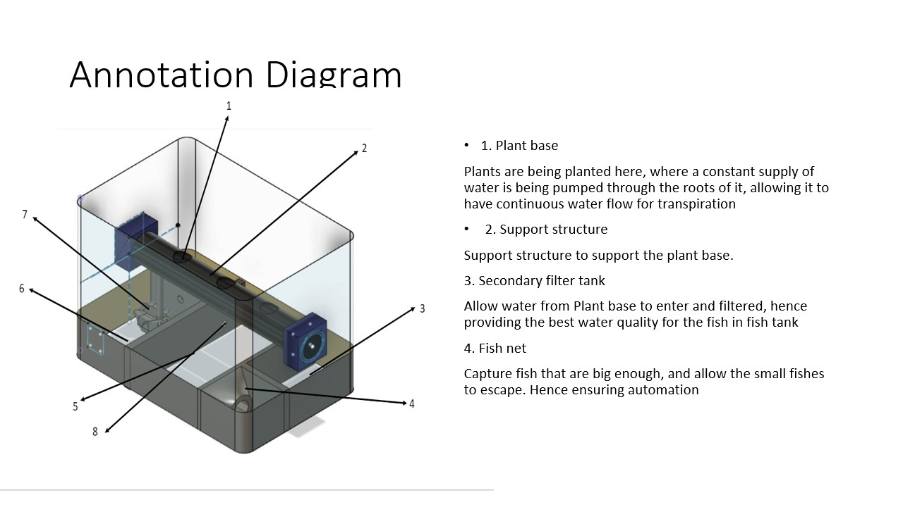
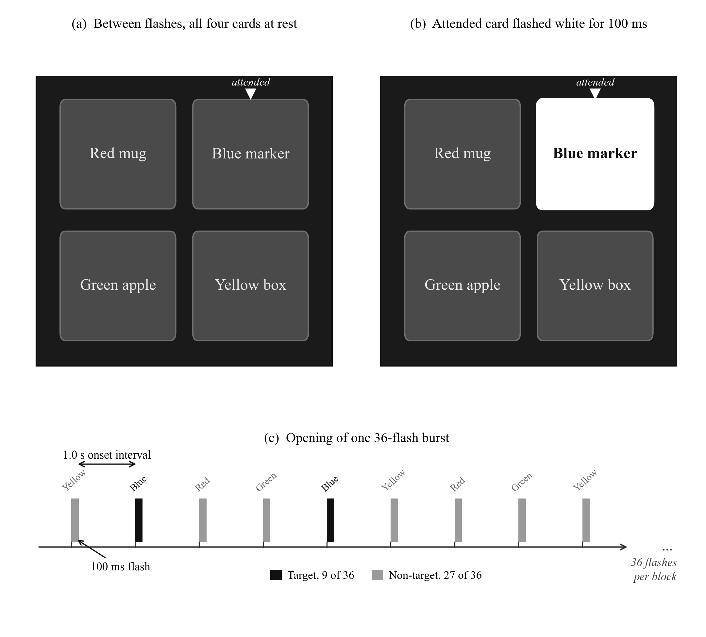
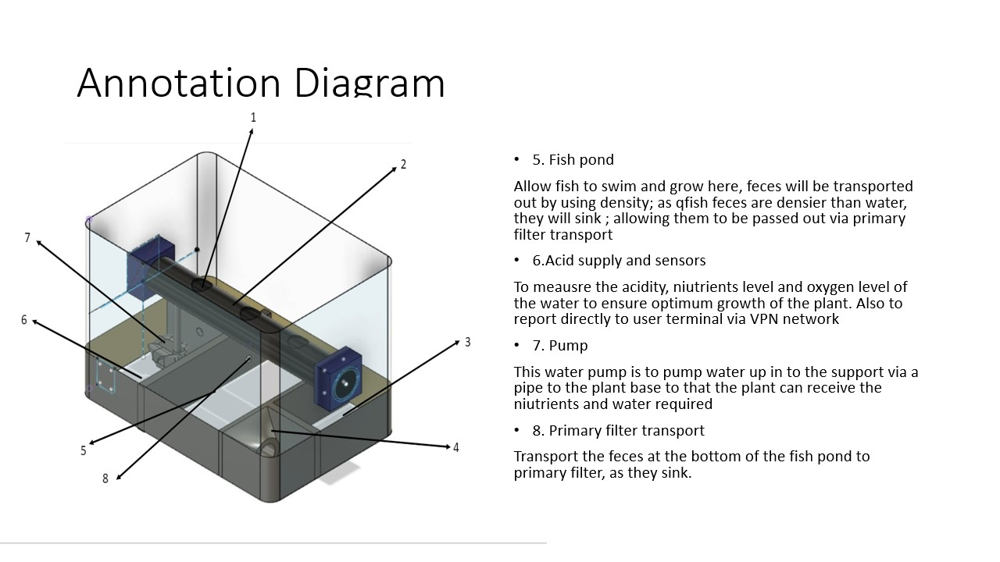
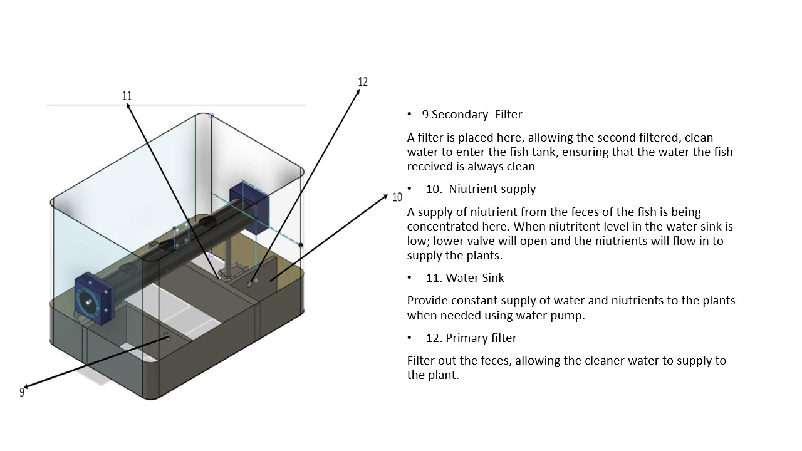
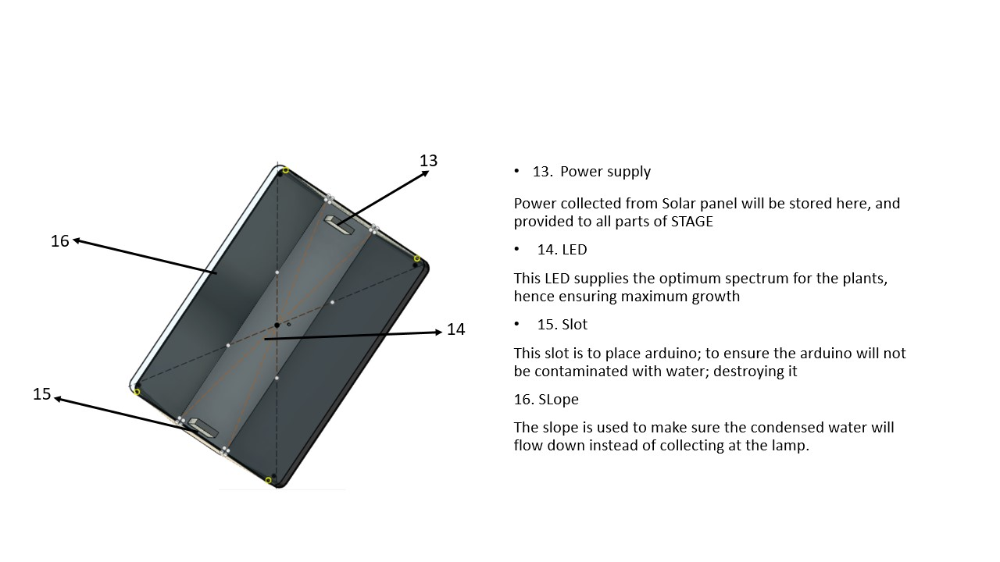

My competition work spans ITEX, APCYA, Tech For Good, TKK and UAiTED. My inventions cover CAD design and EEG tools, as well as computer vision and research software.

STAGE aquaponics concept, TKK 2020.
Competition records
17 entries
C01 · APCYA · 2026
Project Tilepátheia / Project Flamescion
A P300-driven robotic retrieval system. Object targets are presented on screen and a Transformer decodes the attended flashes from 32-channel EEG, the selected target is then sent to a 6-axis arm. Read the full FYP record.

Project Flamescion stimulus interface, with four targets, a 100 ms flash, a 1.0 s onset interval and a 36-flash burst.
C02 · ITEX CAD · 2026
Building Base
Base element of the ITEX building, slide and sledge design, which has 12 component models in one competition entry.
C03 · ITEX CAD · 2026
Building Layer
A building layer of the ITEX design.
C04 · ITEX CAD · 2026
Floor Connector Bottom
The lower floor connector of the ITEX assembly.
C05 · ITEX CAD · 2026
Floor Connector
Floor connector part of the ITEX assembly.
C06 · ITEX CAD · 2026
Sledge
Sledge component of the ITEX set.
C07 · ITEX CAD · 2026
Sledge Leg
The leg model that supports the sledge.
C08 · ITEX CAD · 2026
Sledge Big V2
Version 2 of the large sledge.
C09 · ITEX CAD · 2026
Slide Big
The large slide of the ITEX building and slide design.
C10 · ITEX CAD · 2026
Slide V1
First version of the slide model.
C11 · ITEX CAD · 2026
Slide V1-1
The first subcomponent of the V1 slide, modelled separately.
C12 · ITEX CAD · 2026
Slide V1-2
The second subcomponent of the V1 slide, modelled separately.
C13 · ITEX CAD · 2026
Slide V2
Version 2 of the slide.
C14 · Tech For Good · 2024
Wasteless Water
A modular unit mounted on a boat. It collects floating waste, the water is then treated by ultrafiltration and reverse osmosis.
C15 · Tech For Good · 2024
SolarPunk
A self-sustaining aquaponic greenhouse. Fish culture is combined with NFT hydroponics and rainwater collection, and the greenhouse runs on solar energy while it is being monitored through IoT sensors.
C16 · TKK · 2020
STAGE solar-powered aquaponics
A solar-powered aquaponics concept with plant beds and a fish pond. The water is filtered and its nutrients are recirculated, an Arduino will monitor the sensor readings throughout.

Water and nutrient flow of the STAGE system.

Annotated structure of the STAGE system.

STAGE prototype.
C17 · UAiTED · 2025
EcoFusion Septic
A circular sanitation proposal. Solid septic waste is sent to bioplastic synthesis, the liquid and gaseous waste is captured for energy generation.
Invention records
21 entries
I01 · 2024
BA Land Raider Track Set
Track assembly modelled in Inventor, with exported STL variants.
I02 · 2024
Bed Rack
Rack component, saved as an Autodesk Inventor part.
I03 · 2024
Bed Hook
Hook design, modelled in Inventor and exported as STL.
I04 · 2024
Bed Container
Container component with matching Inventor and STL models.
I05 · 2024
Wireless Charging Stand
A two-part stand made of a main body and a base.
I06 · 2024
Multi-Part Casing System
An enclosure set made up of a base, cover, front, container and joint components.
I07 · 2024
Recruitment Drive Wire-Loop Game
An Arduino wire-loop game with selectable modes. Three LEDs show the remaining lives and a buzzer gives feedback, the enclosure was designed in CAD.
I08 · 2025
Cage Framework Assembly
CAD assembly of a multi-part cage or enclosure structure.
I09 · 2025
Cage Partition and Extruder Modules
Separate CAD subassemblies for the partitions, the top partition and an extruder component.
I10 · 2025
Iris-Based Intent Selection
An RGB camera reads the iris and pupil response, this module was proposed to replace EEG for intent selection in a VLM robotic-arm workflow. Open the repository.
I11 · 2026
Modular Enclosed Structure
A structural system in CAD with a roof, walls, legs and a bottom, held together by supports and connectors.
I12 · 2026
Gesture-Arm IK Calibration
Webcam hand tracking reads the hand position, finger spread and pinch gesture. These are mapped to an arm target, hence the inverse-kinematics joint angles and the gripper state follow the hand.
I13 · 2026
EEG Optimizer
A local Flask tool for analysing uploaded EEG. It has a P300 route and an alpha/beta route, and produces figures and reports.
I14 · 2026
PAST EEG Stress-Task Build
A Python build of a time-pressured adaptive arithmetic task. It writes trial and marker files, LSL markers are published at the same time in order to synchronise the EEG.
I15 · 2026
EEG Stress Analyser
A local tool that compares baseline, before and after recordings by frequency band. Live streaming from EMOTIV Cortex is also supported.
I16 · 2026
Surgical Guard Computer Vision Prototype
A batch computer-vision prototype that flags bleeding and retained equipment for review. It uses OWLv2, with SAM2 masks as an option. Open the repository.
I17 · 2026
Real-Time Object and Material Classifier
A webcam application that sends each frame to a vision model, the most prominent object is then recorded with its material category.
I18 · 2026
Field Engineering Voice Assistant
A console assistant that speaks short troubleshooting guidance on site, for electrical faults and hardware maintenance as well as safety.
I19 · 2026
Malay SDS Output Set
Chemical safety data sheets in Bahasa Melayu, named by chemical record.
I20 · 2026
Malay SDS Web Scraper and Validator
A Playwright and PyMuPDF workflow. It reads a chemical inventory and retrieves candidate SDS PDFs, the Malay-language content of each PDF is then validated with section keywords.
I21 · 2026
Demiurge research assistant
Demiurge is a research assistant I built for a library of reports in PDF, Word and PowerPoint. Every new or changed file is converted to Markdown and the page numbers, slide numbers and text-block positions are kept in the conversion, hence each answer can be traced back to its source. A question will first go through query understanding and local BM25-style keyword retrieval, GPT-OSS-120B then writes the answer from the retrieved passages. Each citation opens the original PDF page with the supporting passage highlighted. A separate model call scores the answer for relevance and grounding as well as citation support. Topic filters narrow the search, and the answer can be given in English, Malay, Simplified Chinese or Traditional Chinese. Online discovery imports public PDFs with a version check against reports already in the library, and every chat keeps its own follow-up memory under the library permissions.
Demiurge demonstration, 2 min 9 s. It covers multi-report questions and cited answers with source highlighting, followed by PDF discovery, chat memory and the measures used in the pilot evaluation.
Prototype
TENG adaptive robotic grip
A tactile-feedback robotic grip prototype that adjusts its grip through closed-loop control. It was tested on a human hand and on a mouse.